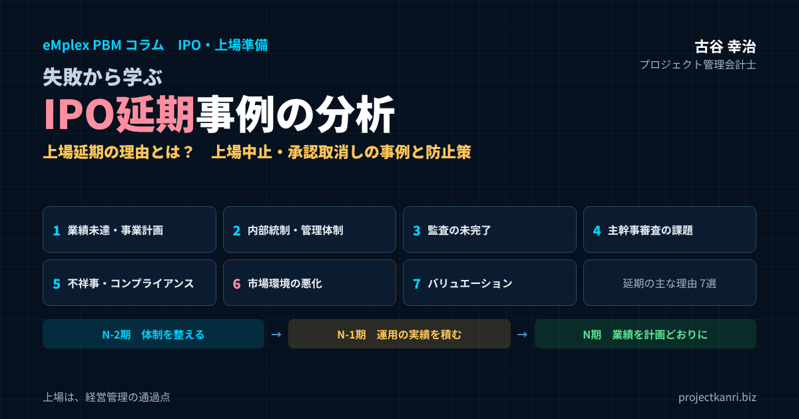

失敗から学ぶIPO延期事例の分析｜IPO延期・上場延期の理由とは？上場中止・承認取消しの事例、業績未達・内部統制の不備・市場環境、N-2期から始める上場延期の防止策と予実管理

結論：IPO延期の多くは「準備の段階」で防げる
この記事の要点
- IPO延期の理由7つ：業績未達／内部統制・内部管理体制の不備／監査未完了／主幹事審査の課題／不祥事・コンプライアンス／市場環境の悪化／バリュエーション・資金調達条件
- 自社でコントロールできる理由から一つずつ潰す。市場環境には資金計画の余力で備える
- 事例の教訓：承認後も安全圏ではない／問題の早期発見／延期は終わりではない
- 防止策：N-2期に体制整備、N-1期に運用実績、N期に業績を計画どおりに
- 土台：根拠のある予算、月次の予実管理と着地見込み、早く正確な月次決算、運用される内部統制
プロジェクト管理会計士の古谷です。私は、エンプレックスで取締役CFOとして上場の準備に携わり、フロンティアハウスでは取締役CMOとして2022年のTOKYO PRO Marketへの上場を経験しました。独立してからは、上場を目指す会社の経営管理の体制づくりをご支援しています。その中で、上場の延期や中止の話を耳にすることは、決して珍しくありません。
IPOの延期は、準備に数年をかけてきた会社にとって、大きな痛手です。監査法人や証券会社への報酬、社内の人員の投入、そして経営者や社員の期待。延期によって、その多くが一度宙に浮きます。延期の理由が社外に伝わらない場合でも、取引先や金融機関、採用の候補者からの見られ方にも影響が出ることがあります。
しかし、延期の理由を整理してみると、その多くは、ある程度パターン化できるものです。業績が計画どおりに進まない、内部管理の体制が整っていない、監査が終わらない、不祥事が見つかる、市場の環境が悪化する、価格の条件が折り合わない。このうち、市場の環境を除く多くの理由は、準備の段階の取り組みで、発生の可能性を小さくすることができます。
本記事の結論は三つです。第一に、IPO延期の理由を、自社でコントロールできるものと、できないものに分け、コントロールできる理由を一つずつ潰していくこと。第二に、業績の予実管理と内部管理の体制を、申請の直前ではなく、N-2期から運用として積み重ねること。第三に、延期が起きたときに、原因を正直に分析し、次の上場につなげる準備をしておくことです。
IPO延期とは？上場中止・承認取消し・申請取下げとの違い
まず、言葉の意味を整理しておきましょう。IPOの延期や中止と一口に言っても、どの段階で、どのような形で起きたのかによって、意味が異なります。
| 言葉 | 意味 | 主な段階 | 外部への公表 |
|---|---|---|---|
| 上場延期 | 予定していた上場の時期を先に送る | 申請前〜承認後 | 承認後の場合は公表されることが多い |
| 上場中止 | 上場の手続きを取りやめる | 主に承認後 | 会社の開示・取引所の公表 |
| 承認取消し | 取引所が新規上場の承認を取り消す | 承認後〜上場日前 | 取引所が公表（理由は詳しく記載されないことが多い） |
| 申請取下げ | 上場申請を審査の途中で取り下げる | 申請後〜承認前 | 一般に公表されない |
| 上場準備の中止 | 上場そのものを目指すことをやめる | いずれの段階でも | 一般に公表されない |
上場延期は、予定していた上場の時期を先に送ることです。上場の申請の前に、主幹事の証券会社との間で上場の時期を見直すこともあれば、上場の承認の後に、上場の手続きを取りやめ、時期を改めて上場を目指すこともあります。
上場の承認の後に上場を取りやめる場合は、取引所が新規の上場の承認を取り消す形で公表されます。会社の申し出による取消しの場合、公表の文書には、会社からの申し出に基づいて承認を取り消した旨だけが記載され、具体的な理由は記載されないことが多くあります。会社が自ら理由を開示する場合もありますが、市場の動向や、確認すべき事項の発生といった、抽象的な表現にとどまることも少なくありません。
上場の申請の取下げは、取引所への上場の申請をした後、審査の途中で申請を取り下げることです。審査の過程で課題が見つかり、その解消に時間がかかる場合などに起きます。申請の取下げは、承認の後の取消しと違い、外部に公表されないことが一般的です。
そして、上場の準備そのものを中止することもあります。事業の環境の変化や、資本政策の見直し、M&Aによる売却など、上場以外の選択肢を選ぶ場合です。本記事では、これらをまとめてIPO延期と呼びつつ、必要に応じて区別して解説します。
延期や中止の公表の有無にかかわらず、社内では、どの段階で、どのような理由で上場の時期を見直したのかを記録しておくことが大切です。その記録が、次の上場の準備の貴重な教訓になります。
上場までの流れと、延期が起きるタイミング
IPOの延期の理由を理解するには、上場までの流れのどの段階で、どのような判断が行われるのかを知っておく必要があります。一般的な流れを整理します。
| 時期 | 主な取り組み | 延期が起きやすい場面 |
|---|---|---|
| N-3期〜N-2期 | ショートレビュー、主幹事選定、体制整備、資本政策 | 課題が多く準備期間の延長が必要と判断 |
| N-1期 | 体制の運用、監査対象期間、予実管理の実績づくり | 運用の実績不足、予算の大幅未達 |
| N期（申請期） | 主幹事の引受審査→取引所への申請→取引所審査 | 審査での課題、申請期の業績進捗の遅れ |
| 承認後〜上場日 | ブックビルディング、公開価格の決定 | 不祥事の発覚、市場環境の急変、価格条件の不一致 |
上場の準備は、一般に、申請する事業年度をN期とし、その前の期をN-1期、さらに前の期をN-2期と呼んで進めます。N-3期からN-2期にかけて、監査法人による短期調査、いわゆるショートレビューを受け、課題を洗い出し、主幹事の証券会社を選び、内部管理の体制を整えます。N-2期とN-1期は、上場の申請に必要な財務諸表の監査の対象となる期間であり、整えた体制を運用し、その実績を積み重ねる期間です。
N期に入ると、主幹事の証券会社による引受の審査を経て、取引所に上場を申請します。取引所の審査を経て上場が承認されると、公開価格を決めるためのブックビルディングなどの手続きを経て、上場日を迎えます。
延期が起きるタイミングは、大きく三つあります。一つ目は、申請の前、主幹事の証券会社の審査の段階で、課題の解消に時間がかかると判断された場合です。二つ目は、申請の後、取引所の審査の段階で、課題が見つかった場合や、申請期の業績の進捗が計画を下回った場合です。三つ目は、承認の後、上場日までの間に、不祥事の発覚や、市場の環境の急変が起きた場合です。後の段階になるほど、延期の影響は大きく、外部にも知られやすくなります。
スケジュールを考えるときは、各段階で想定より時間がかかった場合の余裕も見込んでおきましょう。とくに、監査法人の監査の契約や、主幹事の証券会社の審査の期間は、会社の側だけでは短くできないものです。
データで見るIPOの現状
日本取引所グループの公表資料によると、2025年度に東京証券取引所で上場審査の対象となった銘柄は203銘柄で、前年度から32銘柄増えました。この数には、プライム市場、スタンダード市場、グロース市場、TOKYO PRO Marketへの新規上場の申請と、市場区分の変更の審査の申請が含まれます。同じ年度の株券の新規上場は106銘柄で、その内訳は、プライム市場が7銘柄、スタンダード市場が15銘柄、グロース市場が34銘柄、TOKYO PRO Marketが50銘柄でした。資料では、グロース市場が大幅に減少した一方で、TOKYO PRO Marketが引き続き高い水準を維持していると述べられています。
| 項目 | 数値 |
|---|---|
| 上場審査の対象（新規上場申請・市場区分変更審査の申請の合計） | 203銘柄（前年度比＋32） |
| 株券の新規上場 | 106銘柄（うちテクニカル上場6） |
| プライム市場 | 7銘柄 |
| スタンダード市場 | 15銘柄 |
| グロース市場 | 34銘柄 |
| TOKYO PRO Market | 50銘柄 |
出典：日本取引所グループ 自主規制法人の年次報告（2026年）。
また、東京証券取引所が2022年に公表したIPOに関する見直しの方針の資料では、上場の審査のスケジュールについて、申請期の業績の進捗を確認してから上場するケースが多いと記載されています。申請期の業績の進み具合が、上場の時期の判断に大きく関わっていることが分かります。
市場の動向も、上場の時期の判断に影響しています。グロース市場では、上場の維持の基準の見直しが進められており、上場の後に一定の規模への成長が求められる方向にあります。こうした中で、上場の後も基準を満たし続けられるかを、主幹事の証券会社が上場の前から慎重に見極め、上場の時期について企業と慎重に話し合う傾向が強まっていると報じられています。上場の準備の体制を整えたうえで、市場の環境を見極めながら上場の時期を検討する企業も増えています。
なお、上場の申請の取下げや、審査を通過しなかった件数、その理由は、取引所の公表資料でも詳しくは示されていません。延期の理由の多くは外部からは見えにくいものです。だからこそ、公表されている事例と、一般的な延期の理由のパターンから学ぶことが大切です。
上場の審査の対象となる会社が増えている一方で、グロース市場への新規の上場は減少しています。上場の時期を慎重に見極める会社が増えていることは、延期が必ずしも失敗ではなく、経営の判断の一つとして選ばれていることも示しています。
IPOが延期される主な理由7選
IPOが延期される主な理由を、七つに整理します。
| 理由 | 主な内容 | 自社でのコントロール |
|---|---|---|
| 1. 業績未達・事業計画の未達 | 申請期の業績進捗の遅れ、計画の根拠の乏しさ | できる |
| 2. 内部統制・内部管理体制の不備 | 職務分離、規程の運用、月次決算、ガバナンス | できる |
| 3. 監査法人の監査未完了 | 会計処理の誤り、見解の相違、資料の不備 | できる |
| 4. 主幹事証券会社の審査上の課題 | 関連当事者取引、事業計画、管理体制の課題 | できる |
| 5. 不祥事・コンプライアンス問題 | 不適切会計、情報漏えい、労務、反社、内部通報 | 予防できる |
| 6. 株式市場の環境悪化 | 株価下落、国際情勢の急変 | できない（資金計画で備える） |
| 7. バリュエーション・資金調達条件の不一致 | 公開価格の水準、大口株主の意向 | 一部できる（資本政策） |
この七つの理由は、自社でコントロールできるものと、コントロールが難しいものに分けることができます。業績の未達、内部管理の体制の不備、監査の未完了、証券会社の審査の課題、不祥事やコンプライアンスの問題は、準備の段階の取り組みで、発生の可能性を小さくできるものです。一方で、市場の環境の悪化は、自社ではコントロールできません。価格や資金調達の条件の不一致は、その中間にあたります。以下、それぞれの理由を詳しく見ていきます。
実際の延期は、これらの理由が一つだけで起きるとは限りません。業績の未達と内部管理の不備が重なる、市場の環境の悪化とバリュエーションの問題が重なる、といったように、複数の理由が絡み合って延期の判断に至ることも多くあります。
理由1：業績未達・事業計画の未達
IPOの延期の理由として、最も多いと考えられるのが、業績の未達です。上場の審査では、会社が作った事業計画や、申請期の予算が、合理的な根拠に基づいているか、そして実際の業績がその計画どおりに進んでいるかが確認されます。
申請期の業績が、予算を大きく下回る見込みになった場合、上場の後に開示する業績の予想の信頼性が問われます。上場してすぐに業績の予想を下方に修正することになれば、投資家の信頼を失い、株価にも大きく影響します。そのため、申請期の業績の進捗が計画を下回ると、上場の時期を見直す判断がされることがあります。
業績の未達の背景には、事業計画そのものの甘さがあることが少なくありません。売上の計画が、根拠の乏しい成長率で作られている。大型の案件の受注を前提にしているが、その確度が低い。人の採用の計画と売上の計画が整合していない。こうした計画は、上場の準備の段階で、主幹事の証券会社や取引所から根拠を問われ、説明できなければ、計画の見直しを求められます。
プロジェクト型ビジネスでは、とくに、大型の案件の受注の時期や、売上の計上の時期のずれが、申請期の業績を大きく左右します。一件の大型の案件の検収が期をまたいだだけで、申請期の売上と利益が計画を大きく下回ることもあります。受注の残高と、受注の見込みの確度を、事業計画の根拠として説明できるようにしておくことが重要です。
事業計画の作り方：審査で問われる「根拠」
業績の未達による延期を防ぐには、事業計画の作り方そのものを見直す必要があります。上場の審査で事業計画について問われるのは、数字の大きさではなく、その根拠です。
| 要素 | 根拠として示すもの |
|---|---|
| 売上 | 継続売上・受注残・新規受注見込み（商談一覧×確度×過去の受注率） |
| 原価・利益 | 事業・サービスごとの過去の粗利率の実績 |
| 人員 | 必要人数と採用の実績 |
| 費用 | 部署別の活動計画、契約 |
| 感応度 | 大口失注・採用遅れ・粗利率低下の影響 |
売上の計画は、既存の顧客からの継続の売上、受注の残高から計上される売上、新規の受注の見込みに分けて積み上げます。新規の受注の見込みは、商談の一覧と受注の確度、過去の受注率から見積もります。原価と利益の計画は、事業やサービスごとの過去の粗利率の実績から作ります。人員の計画は、売上の計画をこなすのに必要な人数と、採用の実績から作ります。
そして、計画の前提が外れた場合に、業績がどれだけ動くのかを把握しておきます。大口の案件が一件失注した場合、採用が計画どおりに進まなかった場合、粗利率が一定の幅で下がった場合。こうした感応度を把握していれば、申請期の業績が計画を下回り始めたときに、影響の大きさを素早く説明できます。
根拠のある計画は、審査の場だけでなく、社内の目標の設定や、営業の活動の計画にも役立ちます。
理由2：内部統制・内部管理体制の不備
二つ目の理由は、内部統制と内部管理の体制の不備です。上場の審査では、会社が上場の会社としてふさわしい管理の体制を持っているかが、詳しく確認されます。
| 不備 | 起きること | 対策 |
|---|---|---|
| 職務分離が不十分 | 誤り・不正のリスク | 承認と実行を分け、記録を残す |
| 規程はあるが運用されていない | 運用実績を示せない | N-2期から運用を開始 |
| 月次決算が遅い | 数字が経営判断に使われない | 締めカレンダーと仮締め・本締め |
| 取締役会・監査役が機能していない | ガバナンスの実効性に疑問 | 議題の設計と議事録の整備 |
内部管理の体制の不備として指摘されやすいのは、職務の分離が不十分で、一人の担当者が取引の入力から承認までを行っている状態、規程はあっても運用が伴っていない状態、月次の決算が遅く、数字が経営の判断に使われていない状態、そして、取締役会や監査役が十分に機能していない状態などです。
大切なのは、規程や体制を作ることではなく、それが運用されていることです。上場の審査では、規程に定めたとおりに承認が行われているか、その記録が残っているかが確認されます。規程を整えたのが申請の直前では、運用の実績を示すことができません。N-2期の段階から体制を整え、N-1期を通じて運用の実績を積み重ねることが求められるのは、このためです。
また、上場の後には、内部統制の報告の制度への対応も必要になります。新たに上場した会社は、上場の後の一定の期間、内部統制の報告書に対する監査の証明が免除される仕組みがありますが、内部統制の報告書そのものの提出は必要です。上場の準備の段階で整えた内部統制の仕組みが、上場の後の制度への対応の土台になります。
内部管理の体制を整えるうえで、システムの活用も重要です。承認の流れ、月次の締め、権限の管理を、エクセルや紙ではなく、記録の残るシステムで運用していれば、運用の実績を示すことが容易になります。
理由3：監査法人の監査未完了
三つ目の理由は、監査法人による監査が予定どおりに終わらないことです。上場の申請には、原則として、申請の直前の事業年度を含む一定の期間の財務諸表について、監査法人の監査を受けていることが必要です。
監査が予定どおりに終わらない原因は、さまざまです。過去の会計の処理に誤りが見つかり、修正に時間がかかる。収益の認識の方法や、引当金の計上について、監査法人と会社の見解が分かれる。会計の資料の整備が遅れ、監査の手続きが進まない。いずれの場合も、監査の意見の表明が遅れれば、上場の申請のスケジュールに影響します。
監査の問題を防ぐには、N-3期からN-2期にかけて、監査法人のショートレビューを受け、会計の処理や内部管理の課題を早めに洗い出すことが基本です。そのうえで、指摘された課題を一つずつ解消し、監査法人と会計の方針を早めにすり合わせておきます。近年は、監査法人の側の人員の制約から、上場の準備の会社の監査の受嘱が難しくなっているとも言われます。監査法人の選定と契約は、早めに進めることが大切です。
プロジェクト型ビジネスでは、進捗に応じて売上を計上する案件の進捗度の見積や、赤字の見込みの案件の受注損失引当金の計上が、監査の重要な論点になりやすい領域です。プロジェクトごとの見積総原価と着地見込みを、根拠とともに説明できる管理の仕組みが、監査を円滑に進める鍵になります。
監査法人とは、問題が見つかったときに、早めに相談できる関係をつくっておくことも大切です。会計の処理の判断に迷う取引があれば、決算の後ではなく、取引の前や発生の直後に相談することで、監査の手戻りを防げます。
ショートレビューで見つかりやすい課題
監査法人のショートレビューは、上場の準備の出発点であり、延期の芽を早めに見つけるための重要な機会です。ショートレビューでよく指摘される課題を整理しておきます。
| 領域 | 主な指摘 |
|---|---|
| 会計 | 売上計上基準のあいまいさ、原価計算の未確立、引当金の不足、月次決算の未実施 |
| 管理 | 規程の未整備、職務分離の不足、関連当事者取引の未整理、労務管理の課題 |
| ガバナンス | 取締役会の運営、監査役の機能、内部監査の未実施 |
| 予算 | 予算の根拠の不足、予実管理の未実施 |
会計の面では、売上の計上の基準があいまい、原価の計算の方法が確立していない、引当金の計上が不十分、月次の決算が行われていない、といった課題がよく指摘されます。管理の面では、規程が整っていない、職務の分離が不十分、関連当事者との取引が整理されていない、労務の管理に課題がある、といった指摘が多くあります。
ショートレビューの指摘は、上場までに解消すべき課題の一覧です。指摘を受けたら、課題ごとに、担当者と期限を決めた改善の計画を作り、進み具合を経営会議で毎月確認してください。指摘の解消が遅れることは、上場の延期の最も典型的な兆しの一つです。
ショートレビューの報告書は、経営者自身が読み、指摘の意味を理解しておくことが大切です。
理由4：主幹事証券会社の審査上の課題
四つ目の理由は、主幹事の証券会社の引受の審査で、課題が解消しきれないことです。主幹事の証券会社は、取引所への上場の申請の前に、会社が上場の会社としてふさわしいかを審査します。この審査で課題が指摘され、その解消に時間がかかれば、申請の時期が延びます。
証券会社の審査で確認される項目は、取引所の審査と重なる部分が多く、事業の継続性と収益性、経営の健全性、コーポレート・ガバナンスと内部管理の体制、開示の体制、そして事業計画の合理性などです。とくに、関連当事者との取引、つまり社長や役員、その親族が関わる会社との取引は、取引の必要性と条件の妥当性を厳しく確認されます。
審査の過程では、多くの質問が出され、会社はその一つひとつに、根拠とともに回答しなければなりません。回答が遅れたり、根拠が不十分だったりすれば、審査は長引きます。上場の準備の担当者だけでなく、経営者自身が、自社の事業と管理の体制を、自分の言葉で説明できることが求められます。
関連当事者取引の整理
主幹事の証券会社や取引所の審査で、とくに厳しく確認されるのが、関連当事者との取引です。関連当事者とは、社長や役員、その親族、それらが支配する会社などを指します。
上場の前の会社では、社長が所有する不動産を会社が借りている、社長の親族の会社に業務を委託している、社長が会社の借入の保証をしている、といった取引がよく見られます。これらの取引そのものが禁止されているわけではありませんが、取引の必要性と、条件の妥当性を、合理的に説明できなければなりません。市場の価格と比べて会社に不利な条件であれば、条件の見直しや、取引の解消を求められます。
関連当事者との取引の整理には、時間がかかることがあります。不動産の契約の見直しや、取引先の切り替え、保証の解消などは、相手のあることだからです。N-2期の段階で、関連当事者との取引をすべて洗い出し、整理の方針を決めておくことが、審査での延期を防ぐ鍵です。
整理の結果は、取締役会で承認し、議事録に残しておきます。
理由5：不祥事・コンプライアンス問題
五つ目の理由は、不祥事やコンプライアンスの問題です。上場の準備の途中や、上場の承認の後に、不適切な会計の処理、情報の漏えい、労務の問題、反社会的勢力との関係の疑い、内部通報による不正の発覚などが起きると、上場は延期、あるいは中止されることがあります。
| 問題 | 予防策 |
|---|---|
| 不適切な会計処理 | 会計方針の明文化、内部監査、監査法人との早期協議 |
| 情報の漏えい | 情報管理の規程と体制、アクセス権限の管理 |
| 労務の問題（長時間労働・未払賃金） | 勤怠・工数の記録、36協定の管理 |
| 反社会的勢力との関係 | 取引先・株主・役員のチェック |
| 内部通報による不正の発覚 | 通報窓口と調査体制の整備、早期対応 |
とくに、上場の承認の後、上場日までの短い期間に問題が発覚すると、その影響は大きくなります。投資家への勧誘の手続きが進んでいる中で、リスクの情報を追加するか、上場を中止するかの判断を、短い時間で迫られることになります。
不祥事やコンプライアンスの問題を防ぐには、問題が起きる前に見つける仕組みが欠かせません。内部通報の窓口を整え、通報があった場合に適切に調査し、対応する体制をつくる。労務の管理、とくに残業の時間や未払いの賃金の有無を確認する。取引先や株主、役員の反社会的勢力との関係の有無を確認する。情報の管理の体制を整える。これらは、上場の審査で確認される項目であると同時に、上場の延期を防ぐための予防の策でもあります。
内部通報の仕組みは、上場の準備の中で後回しにされがちな領域です。しかし、上場の準備の過程で社内の不満や不正が表面化し、通報が上場の直前に寄せられることもあります。通報を受け止め、正しく調査できる体制が整っていれば、問題を早く把握し、上場への影響を小さくすることができます。
労務管理の課題：未払い残業と長時間労働
上場の審査で、近年とくに重視されているのが、労務の管理です。未払いの残業代や、長時間労働の問題が見つかると、その解消と、過去の未払いの精算が必要になり、上場のスケジュールに影響することがあります。
労務の問題は、プロジェクト型ビジネスで特に起きやすいものです。プロジェクトの納期が迫ると、残業が増え、休日の出勤も増えます。勤怠の記録と、実際の労働の時間が一致していない、いわゆるサービス残業の問題が潜んでいることもあります。
労務の問題を防ぐには、勤怠の記録を正確に取り、残業の時間が36協定の範囲に収まっているかを毎月確認することが基本です。勤怠の記録と、プロジェクトの工数の記録を突き合わせれば、記録の漏れや、実態との乖離にも気づきやすくなります。工数の記録は、プロジェクトの原価の管理のためだけでなく、労務の管理の証拠としても役立つのです。
労務の課題は、解消までに時間がかかることが多いため、N-2期の段階で、過去の勤怠の記録を点検しておくことをお勧めします。
理由6：株式市場の環境悪化
六つ目の理由は、株式市場の環境の悪化です。株価の大幅な下落や、国際的な情勢の急変によって、投資家の心理が冷え込むと、上場の承認を得ていても、想定した価格での資金調達が難しくなります。その場合、会社や株主、主幹事の証券会社が協議し、上場の時期を見直すことがあります。
報道によれば、2022年の2月から3月にかけて、国際情勢の悪化と株式市場の不安定さを背景に、日本で複数の会社が上場の計画を見送りました。住信SBIネット銀行は、2022年3月に、ウクライナの情勢や最近の市場の動向など、さまざまな環境の変化を総合的に勘案した結果として、上場の延期を公表しています。同社は、その後2023年3月に上場を果たしています。
市場の環境の悪化は、会社ではコントロールできません。しかし、市場の環境が悪化したときに、上場の時期を柔軟に見直せる状態にしておくことは、会社の準備次第でできます。上場の資金調達に頼りきった資金繰りの計画を立てていると、上場の延期がそのまま資金の不足につながります。上場の延期の可能性も織り込んだ資金の計画を立てておくことが、市場の環境の変化に備える最善の策です。
市場の環境は、上場の承認の後、公開価格が決まるまでの数週間の間にも大きく変わることがあります。主幹事の証券会社と、市場の環境が悪化した場合にどう判断するのか、あらかじめ考え方を共有しておくと、判断を迫られたときに慌てずに済みます。
理由7：バリュエーション・資金調達条件の不一致
七つ目の理由は、会社の価値の評価、つまりバリュエーションや、資金調達の条件が折り合わないことです。公開価格の水準について、会社や既存の株主の期待と、投資家の評価の間に大きな差がある場合、上場の時期を見直す判断がされることがあります。
既存の株主、とくに上場の前に出資したベンチャーキャピタルなどの大口の株主は、上場の時の価格によって、投資の成果が大きく変わります。公開価格が、過去の資金調達の時の株価を下回る水準になりそうな場合、大口の株主との調整が難しくなることがあります。
また、グロース市場では、上場の維持の基準の見直しにより、上場の後に一定の規模への成長が求められる方向にあります。上場の時の時価総額が小さい会社は、上場の後に基準を満たせなくなるリスクがあるため、主幹事の証券会社が、上場の時期についてより慎重になっていると報じられています。上場の時の価値の評価は、上場の後の成長の計画とあわせて考える必要があるのです。
バリュエーションの問題を小さくするには、資本政策を早い段階から計画的に作ることが大切です。上場の前の資金調達の株価の水準、株主の構成、上場の後の成長の計画を一体で考え、上場の時の価格について、既存の株主と早めに認識をそろえておきましょう。
既存の株主との認識をそろえるには、上場の時の想定の価格の幅と、その根拠を、主幹事の証券会社の意見も踏まえて、早めに共有しておくことが有効です。
IPOスケジュール遅延の早期警戒サイン
上場の延期は、ある日突然起きるように見えて、実際には、その前にいくつもの兆しが現れていることが多いものです。準備の過程で、次のような兆しが見えたら、スケジュールの見直しを含めて、早めに対応を検討してください。
| サイン | 示していること |
|---|---|
| 月次決算の確定が毎月遅れる | 決算体制・人員の不足 |
| 予実差異の説明が毎月同じ | 原因の分析と対策が機能していない |
| 監査法人の指摘事項の解消が進まない | 改善の計画と体制の不足 |
| 証券会社からの質問への回答が遅れる | 準備の負荷が担当者に集中 |
| 管理部門の担当者の退職が続く | 準備体制に無理がある |
| 着地見込みが毎月下がる | 事業計画の前提が外れている |
月次の決算の確定が毎月遅れている、予算と実績の差異の説明が毎月同じ言い訳になっている、監査法人からの指摘事項の解消が進まない、主幹事の証券会社からの質問への回答が遅れている、管理部門の担当者の退職が続いている。こうした兆しは、いずれも、準備の体制に無理があることを示しています。
兆しに気づいたときに、上場の時期を守ることを優先して無理を重ねると、問題は大きくなります。早めに主幹事の証券会社や監査法人と率直に相談し、必要であれば、自らの判断でスケジュールを見直すほうが、結果として上場への近道になります。延期は、外から強いられるよりも、自ら選ぶほうが、影響は小さく済むのです。
警戒のサインを経営会議で毎月確認する項目として定めておけば、兆しを見落とすことはなくなります。
公表されている上場中止・延期の事例
ここで、公表されている上場の中止や延期の事例を見てみましょう。上場の中止や延期の理由が詳しく開示されることは多くありませんが、会社や取引所の公表資料、報道から、いくつかの事例を確認することができます。
| 会社 | 時期 | 経緯 | その後 |
|---|---|---|---|
| 株式会社ZMP | 2016年 | マザーズ上場承認の直後に顧客情報の漏えいが発覚。公開価格決定日の前日に中止を発表 | — |
| 株式会社インバウンドテック | 2018年 | マザーズ上場承認後、社内で確認すべき事項があるとして中止。第三者委員会の報告を開示 | 2020年12月にマザーズへ上場 |
| ウイングアーク1st株式会社 | 2019年・2020年 | 上場承認が公表されたがいずれも中止 | 2021年3月に東証一部へ上場 |
| 住信SBIネット銀行株式会社 | 2022年3月 | ウクライナ情勢や市場動向など環境の変化を総合的に勘案し上場を延期 | 2023年3月に上場 |
| 株式会社BJC | 2025年10月 | グロース市場の上場承認を、同社の申出に基づき取引所が取消し（詳しい理由の記載なし） | — |
各社・取引所の公表資料および報道に基づきます。延期・中止の背景のすべてが公表されているわけではありません。
株式会社ZMPは、2016年11月にマザーズへの上場の承認が公表された直後に、顧客の情報の漏えいが発覚しました。リスクの情報を追記して投資家への勧誘の手続きを続けましたが、公開価格の決定日の前日にあたる2016年12月8日に、上場の中止を発表しています。
株式会社インバウンドテックは、2018年5月にマザーズへの上場の承認が公表されましたが、社内で確認すべき事項があるとして、上場を中止しました。その後、第三者委員会の報告を得て、上場にあたって懸念される重大な問題点は発見されなかったとする内容を開示し、2020年12月にマザーズへの上場を果たしています。
ウイングアーク1st株式会社は、2019年と2020年に上場の承認が公表されたものの、いずれも上場を中止し、3回目の承認を経て、2021年3月に東証一部へ上場しました。住信SBIネット銀行は、先ほど触れたように、2022年3月に市場の環境の変化を理由に上場を延期し、2023年3月に上場しています。
また、2025年10月には、東京証券取引所が、グロース市場への新規の上場を承認していた株式会社BJCについて、同社からの申し出に基づいて承認を取り消したことを公表しています。取引所の公表の文書には、それ以上の詳しい理由は記載されていません。
これらの事例は、公表されている情報に基づくものであり、延期や中止の背景のすべてが明らかになっているわけではありません。それでも、延期の理由が、市場の環境のような外部の要因だけでなく、情報の管理や、社内の確認すべき事項といった内部の要因からも生じること、そして、延期や中止を経ても、課題を解消して上場を果たす会社が少なくないことが分かります。
これらの事例から分かるのは、延期や中止の理由が、外部からはほとんど見えないということでもあります。だからこそ、自社の準備の中に、延期につながりうる要因が潜んでいないかを、自ら点検し続けることが大切なのです。
事例から読み取れる教訓
公表されている事例から、上場の準備を進める会社が学ぶべき教訓を整理します。
| 教訓 | 取り組み |
|---|---|
| 承認後も安全圏ではない | 上場日まで情報管理・コンプライアンスを緩めない |
| 問題の早期発見が重要 | 内部通報・内部監査・情報管理の体制 |
| 延期は終わりではない | 原因の解消、第三者調査、体制の改善を経て再挑戦 |
| 資金計画の余力が判断を支える | 上場資金に頼りきらない資金計画 |
一つ目の教訓は、承認の後でも安全圏ではないということです。上場の承認は、ゴールの手前であり、上場日までの間に問題が起きれば、上場は中止されます。承認の後の期間も、情報の管理やコンプライアンスの体制を緩めないことが大切です。
二つ目の教訓は、問題の早期の発見の重要性です。情報の漏えいや社内の問題が、承認の後に発覚すると、対応の時間は極めて限られます。内部通報の仕組みや、内部監査、情報の管理の体制が機能していれば、問題をより早い段階で把握し、上場の前に解消できた可能性があります。
三つ目の教訓は、延期は終わりではないということです。インバウンドテック、ウイングアーク1st、住信SBIネット銀行の事例のように、延期や中止を経て上場を果たした会社もあります。延期の原因に正面から向き合い、第三者による調査や体制の改善を経て、改めて上場を目指すことは十分に可能です。
四つ目の教訓は、市場の環境の変化に備える資金の計画の重要性です。市場の環境を理由に延期する判断ができたのは、上場の資金調達がなくても事業を続けられる資金の余力があったからだと考えられます。上場の資金に頼りきった計画では、延期という選択肢そのものが取れなくなります。
そして五つ目の教訓は、延期の判断は早いほど影響が小さいということです。承認の後、公開価格の決定の直前の中止は、投資家や関係者への影響が最も大きくなります。課題の兆しがあれば、申請の前の段階で時期を見直すほうが、会社にとっても関係者にとっても負担は小さく済みます。
IPO延期企業に共通する失敗パターン
延期の理由は会社ごとに異なりますが、私がご支援の現場や見聞きした事例から感じる、延期につながりやすい失敗のパターンを整理します。
| 失敗パターン | 起きること | 対策 |
|---|---|---|
| 上場時期ありきのスケジュール | 体制整備・運用実績が追いつかない | 準備の進捗と業績で時期を判断 |
| 管理部門だけで準備 | 事業計画の根拠・運用が伴わない | 営業・現場・経営者を巻き込む |
| 楽観的な事業計画 | 申請期の未達、上場後の下方修正 | 保守的で根拠のある計画 |
| 規程を作って終わり | 運用実績を示せない | N-2期から運用し記録を残す |
| 問題の先送り | 承認後に発覚し中止 | 早く見つけ、早く開示し、早く解消 |
| 上場資金前提の資金計画 | 延期の判断ができない | 延期も織り込んだ資金計画 |
最も多いのは、上場の時期ありきでスケジュールを組んでしまうパターンです。経営者が上場の時期を先に決め、そこから逆算して準備を進めると、体制の整備や運用の実績づくりが追いつかないまま、申請の時期を迎えてしまいます。上場の時期は、準備の進み具合と業績の状況を見て判断するものだと考えてください。
次に多いのは、管理部門だけで上場の準備を進めるパターンです。上場の準備は、規程や書類を整える管理部門の仕事だと考えられがちですが、実際には、営業、現場、経営者のすべてが関わります。事業計画の根拠は営業と現場にあり、内部統制の運用は全社員の日々の業務の中にあります。管理部門だけでは、上場の準備は完結しません。
そして、事業計画を楽観的に作るパターンです。上場の時の価値の評価を高く見せたいという思いから、売上や利益の計画を高めに作ると、申請期に計画を下回り、延期につながります。上場の後も、業績の予想の下方修正を繰り返すことになりかねません。保守的で、根拠のある計画を作ることが、結果として上場への近道です。
経営者の関わり方が上場の成否を分ける
上場の延期の事例を見ていくと、経営者の関わり方が、準備の成否を大きく左右していることが分かります。
上場の準備をCFOや管理部門に任せきりにしている経営者は、審査の場で自社の事業や管理の体制を説明できず、審査が長引くことがあります。主幹事の証券会社や取引所の審査では、経営者との面談が行われ、経営者自身が、事業の見通しや、リスクへの対応、ガバナンスの考え方を説明することが求められます。
一方で、経営者が上場の時期にこだわりすぎて、準備の課題を軽く見ることも、延期の原因になります。経営者の役割は、上場の目的を社内に示し、必要な人材と予算を確保し、課題の解消を後押しし、準備の進み具合に応じて上場の時期を冷静に判断することです。上場の準備は、経営者自身のプロジェクトだと考えてください。
経営者が率先して準備の課題と向き合う姿勢は、社員にも伝わり、会社全体の準備の質を高めます。
N-2期・N-1期・N期に実施すべきIPO延期の防止策
IPOの延期を防ぐための取り組みを、準備の段階ごとに整理します。
| 時期 | 防止策 |
|---|---|
| N-3期〜N-2期 | ショートレビューで課題の洗い出し、主幹事・監査法人の選定、規程・職務分離・月次決算・予算管理の体制整備、資本政策の計画 |
| N-1期 | 体制の運用と記録、月次の予実比較と取締役会報告、内部監査の実施、予算達成状況の確認 |
| N期（申請期） | 月次の予実管理と着地見込みの更新、乖離の兆しの早期共有、承認後も情報管理・コンプライアンスを維持 |
N-3期からN-2期は、課題を洗い出し、体制を整える期間です。監査法人のショートレビューを受け、会計の処理と内部管理の課題を把握します。主幹事の証券会社を選び、上場までのスケジュールと、市場の選択を相談します。そして、規程の整備、職務の分離、月次決算の体制、予算の管理の仕組みなど、内部管理の体制を整えます。資本政策も、この時期に計画します。
N-1期は、整えた体制を運用し、実績を積み重ねる期間です。規程どおりに承認が行われ、記録が残っているか。月次の決算が決められた日程で締まり、予算と実績の差異が分析され、取締役会に報告されているか。内部監査が実施され、指摘への対応が記録されているか。こうした運用の実績が、上場の審査で確認されます。N-1期の予算の達成の状況も、事業計画の精度を示す材料として重視されます。
N期、つまり申請期は、審査を受けながら、業績を計画どおりに進める期間です。申請期の業績の進捗は、上場の時期の判断に直結します。月次の予実管理と着地見込みの更新を徹底し、計画からの乖離の兆しがあれば、早めに主幹事の証券会社と共有します。そして、承認の後も、情報の管理とコンプライアンスの体制を緩めず、上場日を迎えることが大切です。
どの段階でも共通して大切なのは、課題の一覧と、その解消の進み具合を、経営会議で毎月確認することです。課題の解消が予定より遅れていれば、その時点で手を打つか、スケジュールを見直すかを判断します。
IPO準備における予実管理の重要性
IPOの延期の理由の中でも、業績の未達は、予実管理の仕組みで発生の可能性を小さくできるものの代表です。上場の準備における予実管理のポイントを整理します。
| ポイント | 内容 |
|---|---|
| 予算の根拠 | 受注残・顧客別見込み・人員計画・平均粗利率から積み上げ |
| 月次の予実比較と差異分析 | 事業・部門・プロジェクトまで掘り下げ、取締役会に報告 |
| 着地見込みの更新 | 毎月更新し、乖離の兆しを早期に把握 |
| 予算の精度の振り返り | 前期の予算と実績の差の原因を分析し次の予算へ |
| 上場後の開示 | 業績予想との乖離（売上高10%以上、利益30%以上が目安）で修正開示 |
一つ目は、予算の根拠です。予算は、受注の残高、顧客ごとの受注の見込み、人員の計画、平均の粗利率といった、説明できる前提から積み上げて作ります。前年の実績に成長率を掛けただけの予算では、上場の審査で根拠を問われたときに説明できません。
二つ目は、月次の予実の比較と差異の分析です。毎月、予算と実績を比べ、差異の原因を、事業、部門、プロジェクトの単位まで掘り下げて分析し、取締役会に報告します。この記録が、予実管理の体制が機能していることの証拠になります。
三つ目は、着地見込みの更新です。予算と実績の比較だけでなく、実績と今後の見込みから期末の着地を予想し、毎月更新します。着地見込みと予算の差が大きくなりそうなら、早めに手を打つか、計画の見直しを主幹事の証券会社と相談します。上場の後は、業績の予想と実績の乖離が一定の幅を超える見込みになった場合、業績の予想の修正を開示する必要があります。東京証券取引所の基準では、売上高は10%以上、営業利益や経常利益、純利益は30%以上の乖離が目安とされています。着地見込みの精度は、上場の後の開示の質にも直結するのです。
四つ目は、予算の精度の振り返りです。N-2期やN-1期の予算と実績の差を振り返り、どの前提が外れたのかを分析し、次の予算に活かします。予算の精度が年々上がっていることを示せれば、事業計画の信頼性を説明する強い材料になります。
プロジェクト型ビジネスでは、予実管理をプロジェクトの単位まで落とし込むことが、全社の予実の精度を高める近道です。全社の数字だけを見ていると、差異の原因が見えず、説明もあいまいになります。
IPO準備における内部統制の重要性
内部統制は、上場の審査で確認される中心的な項目であり、その不備は延期の大きな理由になります。上場の準備の段階で押さえておきたい内部統制のポイントを整理します。
| 項目 | 確認されること |
|---|---|
| 職務の分離 | 入力・承認・支払・記録を一人で完結できないか |
| 承認の記録 | 規程どおりに承認され、記録が残っているか |
| 月次決算 | 決められた日程で確定し、締め後に数字が変わらないか |
| ITの統制 | アクセス権限、設定変更、データ変更の管理 |
| 内部監査 | 計画的に実施され、指摘への対応が記録されているか |
まず、職務の分離です。取引の入力、承認、支払い、記録を、一人の担当者が完結できる状態は、誤りや不正のリスクを高めます。人数の少ない会社では、すべてを完全に分けることは難しいこともありますが、少なくとも、承認と実行を分け、承認の記録を残すことが基本です。
次に、月次決算の体制です。月次の数字が決められた日程で確定し、締めた後に数字が変わらないこと。これは、予実管理の前提であると同時に、内部統制の観点からも確認される項目です。締めた後の修正の手順と、修正の記録が残る仕組みも求められます。
そして、ITの統制です。会計や業務のシステムについて、誰がどのデータにアクセスし、変更できるのか、システムの設定の変更がどのように管理されているのかが確認されます。エクセルや手作業に頼った運用は、ITの統制の観点からも課題になりやすい領域です。
内部統制の整備は、上場の審査を通過するためだけのものではありません。誤りや不正を防ぎ、経営が正しい数字で判断するための仕組みです。上場の延期を防ぐという意味でも、上場の後の経営を支えるという意味でも、早い段階から取り組む価値があります。
取締役会・監査役の運営：ガバナンスの実効性
内部管理の体制と並んで、上場の審査で確認されるのが、コーポレート・ガバナンスの実効性です。取締役会が、経営の重要な事項を実際に審議し、決定しているか。監査役や監査等委員会が、取締役の職務の執行を実際に監査しているか。形式だけの取締役会や、名目だけの監査役では、審査を通過することは難しくなります。
取締役会では、月次の業績の報告、予算と実績の差異の分析、重要な契約や投資の承認、関連当事者との取引の承認などを、議題として扱います。議事録には、報告の内容だけでなく、どのような議論があり、どのように決定したのかを記録します。社外の取締役や監査役が、実際に質問し、意見を述べていることも、記録に残しておきましょう。
取締役会の運営が整っていないと、審査の過程で、ガバナンスの改善を求められ、その運用の実績を積むために時間が必要になります。取締役会の議題の設計と、議事録の整備は、N-2期から始めておくべき取り組みです。
社外の取締役や監査役の選任も、早めに進めておきましょう。
開示の体制：上場後を見据えた準備
上場の審査では、上場の後に、投資家に対して適時に適切な情報を開示できる体制があるかも確認されます。決算の情報、業績の予想とその修正、重要な事実の発生などを、決められた期限までに、正確に開示できるかどうかです。
開示の体制が整っていないと、上場の後に、開示の遅れや誤りを起こすリスクがあります。上場の準備の段階で、開示の担当者と責任者を決め、開示すべき事実が発生したときの社内の報告の流れを、規程として整えておきます。とくに、業績の予想の修正の開示は、着地見込みの精度と直結します。毎月の着地見込みの更新の仕組みが、開示の体制の土台になります。
上場の後の四半期や年度の決算の開示の期限を守るには、月次の決算が安定して早く締まっていることが前提です。上場の準備の期間に、上場の後と同じ日程で決算を締める練習をしておくことをお勧めします。
開示の体制は、上場の後に初めて試されるものではなく、上場の前の段階から、取締役会への報告や、株主への説明の中で、少しずつ練習しておくことができます。
管理部門の体制：人材の不足が延期を招く
上場の準備では、管理部門の人材の不足が、延期の隠れた原因になることがよくあります。上場の準備の作業は、通常の経理や総務の業務に上乗せされる形で発生します。規程の整備、監査への対応、証券会社の審査への回答、申請の書類の作成。担当者の数が足りなければ、どれかが遅れます。
とくに重要なのが、CFOや管理部門の責任者の存在です。上場の準備の全体を見渡し、監査法人や証券会社と対等に議論し、経営者に必要な判断を促せる人材がいなければ、準備は場当たり的になります。上場の経験を持つCFOや管理部門の責任者を、N-2期までに確保することをお勧めします。
同時に、担当者に負担が集中しすぎないよう、業務の仕組みを整えることも大切です。月次の決算の手順、予実管理の資料の作成、承認の流れを、仕組みとシステムで支えれば、担当者は審査への対応や課題の解消に時間を使えるようになります。管理部門の担当者の退職が続くと、準備は大きく遅れます。人の確保と、仕組みによる負担の軽減の両方が必要です。
外部の専門家の力を借りることも選択肢です。上場の準備の経験を持つコンサルタントや、経理の実務を支援する会社を活用すれば、社内の担当者の負担を軽くできます。
プロジェクト型ビジネスがIPO準備で注意すべき論点
建設、システム開発、コンサルティング、映像やイベントの制作といったプロジェクト型ビジネスの会社が上場を目指す場合、とくに注意すべき論点があります。
| 論点 | 注意点 |
|---|---|
| 収益認識 | 進捗度の基礎となる見積総原価を毎月更新 |
| 受注損失引当金 | 赤字見込みのプロジェクトを早期に把握 |
| プロジェクト別原価 | 工数の記録に基づく人件費の配分、締め後の固定 |
| 大口案件・顧客への依存 | 受注・検収時期のずれの影響を計画で説明 |
一つ目は、収益の認識です。進捗に応じて売上を計上するプロジェクトでは、進捗度の見積が売上を左右します。見積総原価の見直しが遅れれば、売上と利益が正しく計上されません。プロジェクトごとの見積総原価と着地見込みを、毎月更新する仕組みが欠かせません。
二つ目は、受注損失引当金です。赤字が見込まれるプロジェクトについて、損失を見込んで引当金を計上する必要があるかを、毎期判断します。赤字のプロジェクトの把握が遅れると、決算の数字が後から修正されることになり、監査や審査の大きな論点になります。
三つ目は、プロジェクト別の原価の正確さです。原価の大半を占める人件費を、工数の記録に基づいてプロジェクトに配分しているか。工数の記録が正しく、締めた後に変わらないか。外注費や経費がプロジェクトに正しく紐付いているか。プロジェクト別の原価の正確さは、収益の認識と引当金の判断の前提でもあります。
四つ目は、大口の案件や顧客への依存です。売上の多くを少数の大型の案件や顧客に頼っている場合、その案件の受注や検収の時期のずれが、申請期の業績を大きく左右します。事業計画では、大口の案件の確度と、それが外れた場合の影響を説明できるようにしておきましょう。
プロジェクト型ビジネスの会社にとって、これらの論点は、上場の審査のためだけでなく、プロジェクトの採算の管理そのものの質を高めるものです。上場の準備を機に、プロジェクトの管理の仕組みを整えることをお勧めします。
延期になったらどうするか
どれほど準備をしても、延期が避けられないこともあります。延期になったときに大切なのは、その後の対応です。
| 対応 | 内容 |
|---|---|
| 原因の分析 | 業績・体制・不祥事・市場環境のどれか。必要に応じ第三者調査 |
| 関係者への説明 | 社員・取引先・金融機関・株主に事実と方針を説明 |
| 資金計画の見直し | 上場までのつなぎ資金の確保 |
| 再挑戦の準備 | 課題を解消し、運用の実績を積んでから再申請 |
まず、原因を正直に分析することです。業績の未達なのか、体制の不備なのか、不祥事なのか、市場の環境なのか。原因によって、次の上場までに必要な取り組みも、期間も変わります。原因が社内にあるなら、必要に応じて第三者による調査も検討し、事実を明らかにします。
次に、関係者への説明です。社員、取引先、金融機関、株主に、延期の事実と、今後の方針を説明します。社員の動揺を抑えるには、経営者自身が、延期の理由と、次の上場に向けた計画を、誠実に語ることが大切です。上場を前提とした採用やストックオプションの設計をしている場合は、その影響も確認します。
そして、資金の計画の見直しです。上場による資金調達を前提にした計画は、延期によって見直しが必要になります。金融機関からの借入や、上場の前の追加の資金調達など、上場までのつなぎの資金を確保します。
延期の後、改めて上場を目指す場合は、指摘された課題を一つずつ解消し、その運用の実績を積み重ねたうえで、申請に臨みます。延期を経て上場した会社の事例が示すように、延期は終わりではなく、体制を一段引き上げる機会にすることができます。
社員とストックオプションへの配慮
上場の延期は、社員にとっても大きな出来事です。上場を目指して入社した社員や、ストックオプションを持つ社員にとって、延期は将来の見通しを大きく変えるものだからです。
延期が決まったら、経営者自身が、社員に直接、延期の理由と今後の方針を説明することが大切です。理由をすべて話せない事情があっても、会社として課題に向き合い、改めて上場を目指すのか、別の道を選ぶのかを、できる限り具体的に伝えます。説明が遅れたり、あいまいだったりすると、社員の不安が広がり、優秀な人材の退職につながることがあります。
ストックオプションには、行使の条件や期間が定められています。上場の時期が大きくずれると、行使の期間との関係で、設計の見直しが必要になることもあります。延期の影響を確認し、必要に応じて専門家に相談したうえで、社員に説明しましょう。
延期を経験した社員の声に耳を傾けることも、次の上場の準備に必ず活きます。
TOKYO PRO Marketという選択肢
上場の延期を防ぐ、あるいは段階的に上場を目指すうえで、TOKYO PRO Marketという選択肢も知っておく価値があります。TOKYO PRO Marketは、プロの投資家を対象とした市場で、J-Adviserと呼ばれる指定のアドバイザーの支援のもとで上場を目指す仕組みです。2025年度の株券の新規上場のうち、50銘柄がTOKYO PRO Marketでした。
TOKYO PRO Marketでは、一般の市場と比べて、上場に必要な監査の期間などの要件が異なります。上場の会社としての管理の体制や、開示の責任があることに変わりはありませんが、まずTOKYO PRO Marketに上場して、上場の会社としての運用の経験を積み、その後に一般の市場への市場区分の変更を目指すという段階的な道を選ぶ会社もあります。
私自身、フロンティアハウスの取締役CMOとして、2022年のTOKYO PRO Marketへの上場を経験しました。上場の準備を、管理部門だけでなく、営業やマーケティングを含めた会社全体の取り組みとして進めることの大切さは、どの市場を目指す場合も同じです。どの市場を目指すかは、会社の成長の段階と、資金調達の必要性、管理の体制の成熟度を踏まえて、主幹事の証券会社やJ-Adviserと相談して決めてください。
TOKYO PRO Marketに上場した後も、一般の市場への移行を目指すのであれば、移行の審査に向けて、予実管理や内部統制の運用の実績を積み重ねていく必要があります。
経営者が今すぐ確認すべきチェックリスト
上場を目指す経営者の方に、今すぐ確認していただきたい項目を整理しました。
| 確認項目 | 見るポイント |
|---|---|
| 事業計画の根拠 | 受注残・顧客別見込み・人員計画で説明できるか |
| 月次決算の日数 | 月末から何営業日で確定しているか |
| 予実の差異分析の記録 | 毎月取締役会に報告し、記録が残っているか |
| 着地見込み | 毎月更新しているか |
| 規程の運用 | 承認の記録が残っているか |
| 内部通報の体制 | 窓口と調査の手順があるか |
| 関連当事者取引 | 必要性と条件の妥当性を説明できるか |
| 延期時の資金計画 | 上場資金がなくても事業を続けられるか |
これらの質問に、根拠を持って答えられない項目があれば、そこが上場の延期のリスクが潜んでいる場所です。とくに、事業計画の根拠、月次決算の日数、予実の差異の分析の記録、内部通報の体制、上場が延期になった場合の資金の計画の五つは、上場の時期を決める前に確認しておくべきものです。
チェックリストは、一度確認して終わりではなく、四半期ごとに見直し、改善の進み具合を経営会議で共有してください。
実務家として伝えたいこと：上場は、経営管理の通過点
私は、朋友建設の財務部でキャリアを始め、入社から二年後に会社が和議を経験するのを見ました。その後、エンプレックスで取締役CFOとして上場の準備に携わり、ホリプロでは上場企業の経営企画の責任者として開示の業務を担い、フロンティアハウスではTOKYO PRO Marketへの上場を経験しました。上場の前と後の両方の立場を経験して感じるのは、上場は、ゴールではなく、経営管理の通過点だということです。
上場の審査で求められることは、予算と実績を管理し、数字を早く正確に締め、内部の統制を効かせ、リスクを早く見つけて対応することです。これらは、上場のためだけに必要なものではありません。会社が成長し続けるために、本来必要な経営の基盤です。上場の準備を、審査を通過するための作業ではなく、経営の基盤を一段引き上げる機会として捉えれば、延期のリスクは自然に小さくなります。
延期を恐れるあまり、問題を隠したり、計画を楽観的に作ったりすれば、かえって延期のリスクは高まります。問題は早く見つけ、早く開示し、早く解消する。計画は保守的に、根拠を持って作る。この当たり前のことを、上場の準備の数年間にわたって続けられるかどうかが、上場を実現できるかどうかの分かれ目だと、私は考えています。
eMplex PBMで上場準備の予実管理と月次決算を支える
私たちが提供しているeMplex PBMは、プロジェクト型ビジネスの予算、実績、着地見込みを管理するクラウドサービスです。上場の準備で求められる予実管理と月次決算の体制づくりを、プロジェクトの単位から支えます。
業種別のテンプレートで、売上、労務費、外注費、直接経費の予算をプロジェクトごとに作り、フォーキャストレポートで着地見込みと粗利率のアラートを確認できます。着地見込みは、案件種別、取引先、部署といった切り口でドリルダウンでき、事業別・プロジェクト別の収支レポートで、差異の原因をプロジェクトの単位まで掘り下げることができます。
月次は、仮締めと本締めの二段階のロックで数字を確定させ、財務会計の仕訳データとしてCSVで出力できます。承認センターと監査ログ、権限マトリクスは、承認の記録と権限の管理を支え、取引先の与信や反社会的勢力のチェックの機能も備えています。上場の準備の経営管理の基盤として、ご検討いただければ幸いです。
まとめ：IPO延期を防ぐ経営管理体制とは
IPOの延期の理由と、その防止策を振り返ります。IPOの延期には、上場の時期の見直し、承認の後の取消し、申請の取下げなどの形があり、申請の前、申請の後、承認の後のどの段階でも起こりえます。延期の主な理由は、業績の未達、内部統制と内部管理の体制の不備、監査の未完了、主幹事の証券会社の審査の課題、不祥事やコンプライアンスの問題、市場の環境の悪化、バリュエーションや資金調達の条件の不一致の七つです。
公表されている事例からは、承認の後でも安全圏ではないこと、問題の早期の発見が重要であること、延期は終わりではないこと、資金の計画の余力が延期の判断を支えることが読み取れます。延期を防ぐには、N-2期から体制を整え、N-1期に運用の実績を積み、申請期に業績を計画どおりに進めること。その土台となるのが、根拠のある予算、月次の予実管理と着地見込みの更新、早く正確な月次決算、そして運用される内部統制です。上場は経営管理の通過点です。延期の理由から学び、自社の経営の基盤を一段引き上げる機会にしてください。
まずは、本記事のチェックリストを使って、自社の準備の状況を点検するところから始めてみてください。
よくある質問（FAQ）
Q. IPO延期の主な理由は何ですか？
A. 主な理由は、①業績未達・事業計画の未達、②内部統制・内部管理体制の不備、③監査法人の監査未完了、④主幹事証券会社の審査上の課題、⑤不祥事・コンプライアンス問題、⑥株式市場の環境悪化、⑦バリュエーション・資金調達条件の不一致の7つです。⑥を除く多くは準備段階の取り組みで発生の可能性を小さくできます。
Q. 上場延期と上場中止、承認取消しの違いは？
A. 上場延期は予定していた上場時期を先に送ること、上場中止は上場の手続きを取りやめることです。上場承認後に取りやめる場合は、取引所が新規上場の承認を取り消す形で公表され、会社の申出による場合は詳しい理由が記載されないことが多くあります。申請後の申請取下げは、一般に外部に公表されません。
Q. IPO延期の事例にはどのようなものがありますか？
A. 公表情報では、顧客情報の漏えい発覚後に上場を中止したZMP（2016年）、社内確認事項を理由に中止後、第三者委員会の調査を経て2020年に上場したインバウンドテック、2度の承認後の中止を経て2021年に上場したウイングアーク1st、市場環境を理由に2022年に延期し2023年に上場した住信SBIネット銀行などがあります。
Q. IPO延期を防ぐには何をすればよいですか？
A. N-3〜N-2期にショートレビューで課題を洗い出して体制を整え、N-1期に運用の実績を積み、申請期に業績を計画どおり進めることです。根拠のある予算、月次の予実管理と着地見込みの更新、早く正確な月次決算、運用される内部統制、内部通報の体制、延期も織り込んだ資金計画が土台になります。
Q. 上場審査で予実管理はなぜ重要なのですか？
A. 事業計画の合理性と、上場後に業績予想を適切に開示できる体制があるかを示すためです。上場後は業績予想と実績の乖離（売上高10%以上、利益30%以上が目安）で修正開示が必要になるため、着地見込みの精度が開示の質に直結します。
Q. IPOが延期になったらどうすればよいですか？
A. 原因を正直に分析し（必要に応じ第三者調査）、社員・取引先・金融機関・株主に事実と方針を説明し、上場資金を前提にした資金計画を見直してつなぎ資金を確保します。指摘された課題を解消し運用実績を積んだうえで再申請に臨みます。延期を経て上場した会社も少なくありません。